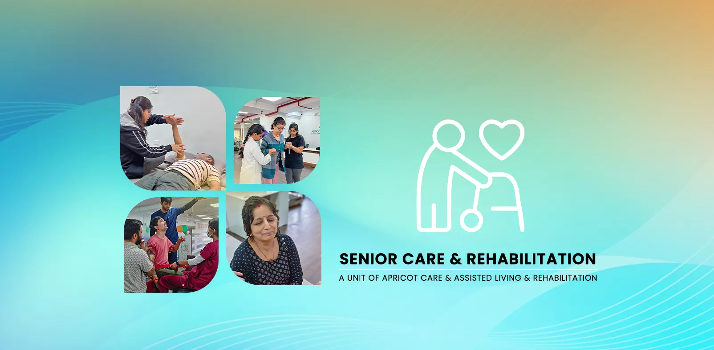

Dedicated Senior Care & Geriatric Rehabilitation in Pune


Promoting Active Aging, Independence, and Quality of Life
Aging is a natural part of life, and with it comes a desire to remain active, engaged, and independent in the comfort of one's own home. However, age-related changes like decreased strength, impaired balance, and chronic conditions like arthritis can make this challenging, leading to a fear of falling and a decline in quality of life.
At Apricot Rehab in Pune, we believe in a philosophy of proactive, healthy aging. Our specialized Senior Care program is designed to empower older adults to maintain their highest level of function, safety, and independence. We don't just treat conditions; we partner with seniors and their families to create a personalized wellness plan that builds strength, improves confidence, and enhances life at every age.
Is This Program Right for Your Loved One?
Every senior has different needs. Some are recovering from a recent health event. Others are experiencing a gradual decline in strength and confidence that makes everyday life harder than it used to be. Our Senior Care program at Apricot Care is designed for older adults across a wide range of situations, and the first step is always a thorough assessment to understand exactly where your loved one stands.
This program is suitable for:
Seniors recovering from hospitalization or surgery
A hospital stay, even a short one, can cause rapid muscle loss and deconditioning in older adults. If your parent was recently discharged after a knee replacement, cardiac procedure, abdominal surgery, or prolonged illness, they likely need structured reconditioning to regain the strength and confidence to function safely at home.
Elderly individuals experiencing repeated falls or near-falls
If your loved one has fallen even once in the past six months, or if they have started grabbing furniture and walls for support while walking, they are at significant risk for a serious fall-related injury. Our fall prevention program directly addresses this.
Seniors with progressive mobility decline
Conditions like osteoarthritis, osteoporosis, or general age-related deconditioning can slowly rob an older adult of their ability to walk to the market, climb stairs, or get in and out of a chair independently. If you have noticed your parent moving slower, avoiding stairs, or giving up activities they once enjoyed, professional intervention can reverse much of this decline.
Older adults diagnosed with sarcopenia or frailty
Sarcopenia (the age-related loss of muscle mass) affects a large percentage of adults over 60 in India. If a physician has flagged low muscle mass, reduced grip strength, or general frailty, a supervised resistance training program is the single most effective treatment.
Seniors struggling with daily activities
If bathing, dressing, cooking, or toileting has become difficult or unsafe for your loved one, our occupational therapy team can assess their needs and provide practical solutions that restore independence.
Families seeking supervised care during transition periods
Sometimes an elderly parent is not yet ready to manage alone after a hospital discharge, but does not need acute medical care either. Our inpatient program bridges this gap, providing a safe, medically supervised environment where your loved one can rebuild their abilities before returning home.
Whether your loved one needs a short-term reconditioning program after surgery or ongoing wellness support to stay active and independent, our team will assess their specific situation and recommend the right level of care.
Warning Signs That Your Parent Needs Professional Support
Many families wait too long before seeking professional rehabilitation for an aging parent. The signs of decline are often gradual, and it is easy to dismiss them as "just getting older." But early intervention produces dramatically better outcomes than waiting until a crisis, like a hip fracture or a serious fall, forces the family to act.
Consider professional senior care if your loved one is showing any of these signs:
- One or more falls in the past six months, even if no injury occurred. A fall that does not cause injury is still a warning that balance and strength have declined to a dangerous level.
- Visible difficulty getting up from a chair, bed, or toilet without pushing off with their hands or needing someone to pull them up.
- Noticeable decline in walking speed or confidence. If your parent now walks significantly slower than they did a year ago, avoids uneven surfaces, or hesitates at curbs and steps, their gait and balance systems need attention.
- Increasing dependence on furniture, walls, or other people for balance while moving around the house.
- Withdrawal from activities they previously enjoyed. If your parent has stopped going for morning walks, visiting neighbors, attending religious gatherings, or shopping at the local market because they feel unsteady or tired, their world is shrinking due to physical limitation.
- Difficulty managing stairs they previously handled without trouble.
- Unexplained weight loss or visible muscle wasting, particularly in the thighs and calves.
- Frequent complaints of joint pain that are limiting their willingness to move or participate in daily life.
- Increased fear or anxiety about falling, even if they have not yet fallen. Fear of falling is itself a major risk factor because it leads to inactivity, which accelerates decline.
If you recognize three or more of these signs in your parent, we strongly recommend scheduling a geriatric assessment. The sooner a structured program begins, the more function and independence we can preserve.
Conditions Our Senior Care Program Addresses
Aging rarely presents a single, isolated challenge. Most seniors manage multiple conditions simultaneously, and each one affects the others. Our multidisciplinary team is experienced in managing the following conditions within our geriatric rehabilitation framework:
Osteoarthritis and Joint Degeneration
Osteoarthritis is the most common chronic pain condition in Indian seniors, particularly affecting the knees, hips, and hands. It causes stiffness, swelling, and pain that progressively limits mobility. Many seniors reduce their activity to avoid pain, which ironically accelerates joint stiffness and muscle weakness. Our approach combines gentle manual therapy to improve joint mobility, targeted strengthening exercises to reduce load on the affected joints, and pain-relieving modalities. The goal is not to eliminate arthritis, but to manage it so effectively that your loved one stays active and engaged.
Osteoporosis and Bone Health
Osteoporosis weakens bones to the point where even a minor fall can cause a fracture. It is especially prevalent among post-menopausal women in India, though men over 70 are also at significant risk. A hip fracture in an elderly person can be life-altering, often leading to prolonged bed rest and a cascade of complications. Our program includes safe, supervised weight-bearing and resistance exercises that are clinically proven to improve bone density and reduce fracture risk. We also provide education on fall-proof movement strategies to protect vulnerable bones during daily activities.
Post-Surgical Deconditioning
Even a few days of bed rest during a hospital stay can cause dramatic muscle loss in an older adult. Seniors who have undergone knee or hip replacement, cardiac surgery, abdominal procedures, or treatment for a prolonged illness often return home significantly weaker than before the surgery. They may struggle with stairs, transfers, and walking distances they previously managed easily. Our graded reconditioning program starts with basic bed mobility and seated exercises, then progressively builds toward standing balance, walking endurance, and stair navigation, restoring the function that was lost during the hospital stay.
Age-Related Balance Disorders
Balance is a complex skill that depends on input from your eyes, inner ear, joints, and muscles working together. Aging can disrupt any or all of these systems. Conditions like BPPV (a common type of vertigo caused by inner ear crystals), peripheral neuropathy (nerve damage that reduces sensation in the feet), and general vestibular decline all increase fall risk dramatically. Our physiotherapists are trained in vestibular rehabilitation techniques, including the Epley maneuver for BPPV and sensory integration exercises that retrain the body's balance systems to compensate for age-related changes.
Diabetic Complications in Elderly
Long-standing diabetes frequently causes peripheral neuropathy, a condition where nerve damage reduces sensation in the feet and lower legs. For a senior, this means they cannot feel the ground properly, which severely impairs balance and increases the likelihood of missteps and falls. Many diabetic seniors also experience slower wound healing, making any fall-related injury more dangerous. Our program includes proprioceptive retraining exercises that teach the body to rely on alternative balance cues, along with foot care education and safe footwear guidance to reduce injury risk.
Urinary Incontinence
Urinary incontinence is one of the most common yet least discussed conditions among Indian seniors. It causes embarrassment, social withdrawal, and, critically, an increased fall risk because seniors rush to the bathroom. Nighttime urgency is particularly dangerous when combined with poor lighting and drowsiness. Our occupational therapy team addresses this through pelvic floor strengthening exercises, toileting schedule training, and practical home modifications like ensuring a clear, well-lit path to the bathroom. Restoring continence confidence can have a transformative effect on a senior's willingness to stay active and social.
Chronic Respiratory Conditions
Conditions like COPD (chronic obstructive pulmonary disease) and age-related decline in lung capacity cause breathlessness that limits a senior's ability to walk, climb stairs, or perform daily tasks. Many seniors with respiratory issues become sedentary out of fear that activity will make them more breathless. In reality, a properly designed exercise program improves breathing efficiency and endurance. Our program includes controlled breathing exercises, graded aerobic conditioning that safely builds stamina, and energy conservation techniques that teach seniors how to pace their activities to avoid exhaustion.
Depression and Social Isolation in Elderly
Physical decline and chronic pain often lead to social withdrawal. A senior who can no longer walk to the temple, visit neighbors, or attend family gatherings begins to lose their sense of purpose and connection. Depression in the elderly is significantly underdiagnosed in India, and its symptoms (fatigue, loss of appetite, sleep disturbance, withdrawal) are often dismissed as normal aging. Our program recognizes that physical and mental health are inseparable. Group therapy sessions, cognitive stimulation activities, and structured social interaction are built into the program. We also provide caregiver counseling to help families recognize and respond to signs of depression in their loved one.
Key Components of Our Senior Care Program
Our holistic program addresses the most common challenges faced by older adults.
Supporting the Family Behind the Senior
When a senior needs rehabilitation, the entire family is affected. Adult children managing their parent's care often juggle their own jobs, households, and emotional stress. Caregivers who assist an elderly parent at home face physical strain and the constant anxiety of "Am I doing this correctly?" At Apricot Care, we believe that supporting the family is as important as treating the senior, because a confident, informed caregiver is one of the strongest factors in a successful recovery.
Hands-On Caregiver Training
We provide structured training sessions where family members and home caregivers learn the practical skills needed to assist a senior safely at home:
- Safe transfer techniques: How to help your parent move from bed to wheelchair, wheelchair to chair, chair to standing, and in and out of a car, without injuring yourself or them.
- Proper body mechanics: The correct way to lift, support, and guide an elderly person to protect your own back and joints from strain. Caregiver back injuries are extremely common and entirely preventable with the right technique.
- Home exercise supervision: We teach you how to confidently guide and supervise the daily exercises prescribed in your parent's home program, so that progress continues between professional sessions.
- Fall response training: What to do if a fall happens at home. How to assess for injury, how to safely help your parent up from the floor (or when not to move them), and when to call for medical help.
- Mobility aid management: If your parent uses a walker, cane, or wheelchair, we train you on correct usage, adjustment, and maintenance so the device actually protects them rather than creating new hazards.
Emotional Support and Caregiver Wellness
Caregiver burnout is real, and we see it frequently. The emotional toll of watching a parent decline, combined with the physical demands of daily assistance, can lead to exhaustion, frustration, and guilt. Our team provides counseling sessions for family members, practical coping strategies for managing stress, and guidance on setting healthy boundaries so that caring for your parent does not come at the cost of your own health.
Discharge and Home Care Guide
When a senior completes their program or transitions to home-based care, we provide the family with a detailed written home care guide. This document includes the senior's current exercise program with clear instructions and illustrations, a fall prevention checklist for every room in the house, medication and follow-up appointment reminders, emergency protocols specific to the senior's conditions, and contact information for our team so you are never left guessing. Families who live in a different city can also request regular progress updates via phone or video call, so they stay fully informed about their parent's recovery even from a distance.
What Does a Week Look Like in Our Program?
Families often ask us what their parent's days will actually look like in our program. While every plan is personalized, here is a general overview of how a typical week is structured for a senior enrolled in our center-based rehabilitation program.
Morning Sessions (Primary Therapy Block)
Each day begins with a gentle warm-up designed to ease stiffness and prepare the body for activity. This is followed by the primary physiotherapy session, which focuses on that week's priority goals. During one week, the focus might be balance training using standing drills, tandem walking, and weight-shifting exercises. The following week, the emphasis might shift to progressive resistance training for the legs and core. Gait training sessions are integrated throughout, with the physiotherapist working one-on-one with the senior to improve walking speed, stride length, foot clearance, and confidence.
Mid-Morning (Rest and Nutrition)
After the primary therapy block, the senior has a structured rest period. Fatigue management is a core part of our program, especially for seniors recovering from surgery or managing chronic conditions. During this break, our nutritional support team ensures appropriate hydration and a balanced mid-morning meal tailored to the senior's dietary needs, whether that includes diabetic-friendly options, high-protein meals for muscle recovery, or soft-textured food for those with dental or swallowing concerns.
Late Morning (Occupational Therapy and Functional Training)
Occupational therapy sessions focus on real-world tasks. The therapist works with the senior on activities like safe transfers (bed to chair, chair to standing), kitchen tasks (reaching, gripping, standing safely at a counter), personal hygiene activities, and stair navigation. For seniors receiving home care assessments, this is when the OT discusses and trains on any recommended modifications or assistive devices.
Afternoon (Cognitive Stimulation and Pain Management)
Afternoons are reserved for cognitive stimulation activities designed to keep the mind sharp, including memory exercises, problem-solving tasks, and group interaction sessions where seniors engage with each other in a supportive, social environment. Pain management modalities, such as heat therapy, gentle manual techniques, or electrotherapy, are provided as needed to address chronic discomfort from arthritis or other conditions.
Program Frequency
The center-based program typically runs 5 to 6 days per week, with dedicated rest days built into the schedule to prevent fatigue and allow the body to recover and adapt. Each week's intensity and focus areas are adjusted based on the previous reassessment cycle. For seniors enrolled in our home care program, a modified version of this structure is delivered through 3 to 5 home visits per week, depending on the care plan. Home care patients also receive a written daily exercise sheet to maintain continuity between professional sessions.
- Comprehensive Fall Prevention Program:
Our#1 priority, combining balance, strength, and safety training.
- Balance & Gait Training:
To improve stability and walking confidence.
- Pain Management for Arthritis & Chronic Conditions:
Gentle therapies to improve comfort and mobility.
- Occupational Therapy for Home Safety:
Practical solutions for a safer home environment.
- Post-Hospitalization Rehabilitation:
Helping seniors regain strength and function after an illness or surgery.
- Caregiver Education & Training:
Supporting families in providing safe assistance.
- Cognitive & Memory Stimulation:
Activities to keep the mind sharp and engaged.
The Goal of Geriatric Rehabilitation: A Philosophy of Empowerment
The goal of our senior care program is not to reverse aging, but to optimize it. We focus on empowering older adults to:
- Maintain Independence: Continue performing daily activities like dressing, cooking, and walking in the community.
- Ensure Safety:Dramatically reduce the risk of debilitating falls.
- Manage Pain: Effectively control pain from chronic conditions to stay active.
- Improve Overall Health: Enhance cardiovascular health, strength, and endurance.
The risk of falls among the elderly is a silent epidemic. Studies in India have shown that as many as 1 in 3 seniors fall each year, often leading to serious injuries that compromise their independence. Our program is designed to directly combat this risk.
Book a Senior Wellness ConsultationOur Comprehensive Program for Senior Wellness
We create a personalized plan that addresses the specific needs and goals of each senior client.
Fall Prevention Program: Our Top Priority
A fall can be a life-changing event. Our comprehensive program is the most effective way to prevent one from happening.
- Balance Training: We use a variety of targeted exercises, from simple standing drills to more complex activities, to challenge and improve your body's balance systems.
- Strength Training: Strong leg and core muscles are essential for stability. We design a safe, progressive strengthening program to provide your body with a solid foundation.
- Gait Assessment:We analyze your walking pattern to identify any issues that could contribute to a fall and provide corrective exercises.
Combating Age-Related Weakness (Sarcopenia)
Sarcopenia is the natural loss of muscle mass and strength as we age. It is a primary cause of frailty and functional decline.
- How we help:The only proven treatment for sarcopenia is progressive resistance trainingThe only proven treatment for sarcopenia is progressive resistance training. We create a safe, gentle, and effective strengthening program using light weights or resistance bands to rebuild and maintain your vital muscle mass, making all daily tasks easier. We create a safe, gentle, and effective strengthening program using light weights or resistance bands to rebuild and maintain your vital muscle mass, making all daily tasks easier.
Pain Management for Arthritis & Chronic Conditions
Living with chronic pain from conditions like osteoarthritis should not mean living an inactive life.
- How we help:Our Physiotherapists use gentle manual therapy techniques to improve joint mobility, targeted exercises to strengthen the muscles that support painful joints, and modalities to provide pain relief Pain Management Page
Occupational Therapy for a Safe & Independent Home Life
Our occupational Physiotherapists are experts in creating a safe and enabling home environment.
- How we help: We can provide a home safety assessment to identify and eliminate fall hazards. We can also recommend and provide training on assistive devices (like grab bars or specialized tools) that make daily tasks easier and safer, allowing you to remain independent at home for longer.

our service
Our Comprehensive Care and Support Services
.webp)
.webp)
-(1).webp)
24/7 Nursing and Medical Supervision
At Apricot Care Assisted Living and Rehabilitation, we provide 24/7 nursing support to ensure that you receive continuous care and medical monitoring. Whether you're staying in our facility or recovering at home, our trained nurses and medical staff are always available to address your needs, ensuring a safe and secure environment throughout your recovery journey.
.webp)
.webp)
.webp)
.webp)
.webp)
.webp)
.webp)
.webp)
.webp)
.webp)
.webp)
.webp)
Why Apricot Rehab is Pune's Choice for Senior Care
A Gentle, Patient-Centered Approach:
We understand the unique physical and emotional needs of older adults. We never push too hard. Our sessions are paced to your comfort and energy levels, in an encouraging and respectful environment.
Expertise in Balance & Fall Prevention:
Our Physiotherapists have specialized training in geriatric rehabilitation and are experts in designing the most effective fall prevention programs.
Focus on Functional, Real-World Goals:
Our goal isn't just to improve your strength on a machine; it's to give you the strength and confidence to walk to the local market, play with your grandchildren, or climb stairs without fear.
Comprehensive Home Safety Services:
We go beyond the center by offering expert home assessments through our Occupational Therapy team, providing a complete solution for senior safety.